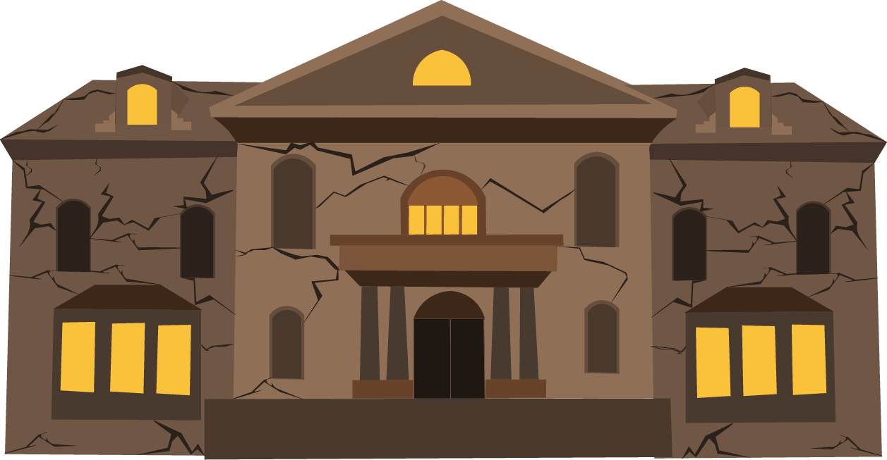

How to make these delicious cookies!
1. Beat 1½ CUP sugar, 1 CUP butter, 1 egg, and 1 TSP vanilla extract in one bowl.
2. Mix 2¾ CUP all-purpose flour and 1 TSP baking soda in another.
3. Slowly blend the two mixtures.
4. Roll the dough flat and use a cookie cutter to make the shapes you desire.
5. Bake until the edges are golden.
6. Add icing and food coloring for the designs that you desire!
image source
The Wonder of Fall
Why we choose this theme
We selected the fall and spooky season theme for Technica 2024 to coincide with the event's timing, just days before Halloween. Our inspiration also draws from the rich color palette of fall, renaissance art, and classic horror films.
A Modern Take on a Magazine: An Interactive Webzine
Our interactive webzine features a haunted house. Click on the windows to explore: some are “spooky windows” and may lead you to try another. Look for the Costume Closet to find Halloween costumes based on your Myers-Briggs personality type, and the Kitchen for spooky season recipes. Enjoy!
If you don't know your personality type, take the test!

This a spooky window try again!
X
Anagha Bhuvanagiri
Spooky Season Food
Hi! My name is Anagha Bhuvanagiri and I'm a first-year Computer Science major at the University of Maryland, where I'm a member of the ACES Honors College. I'm deeply passionate about using technology to create a positive impact in the real world, and participating in the Technica Fellowship has been pivotal in helping me build the skills needed to achieve this. Since I'm a huge autumn-lover, I decided to theme this project around the Halloween season! When I'm not working with tech, you'll find me traveling, exploring new cuisines, or binge-watching Netflix shows.
Connect with me!
Samragyee Dhakal
Interactive Haunted House and Costume Closet
Hello! Thank you for visiting our website. I'm Samragyee Dhakal, one of the creators of this project. I’m currently a Computer Engineering student at the University of Maryland, Class of 2028, and a member of the ACES Honors College. My passion in technology stems from its ability to change the world for the better. This potential to make a meaningful impact motivates me to continue learning and contributing to the field. I joined the Technica Fellowship to make friends, expand my network, and sharpen my skills. In my spare time, I enjoy playing tennis.
Connect with me!